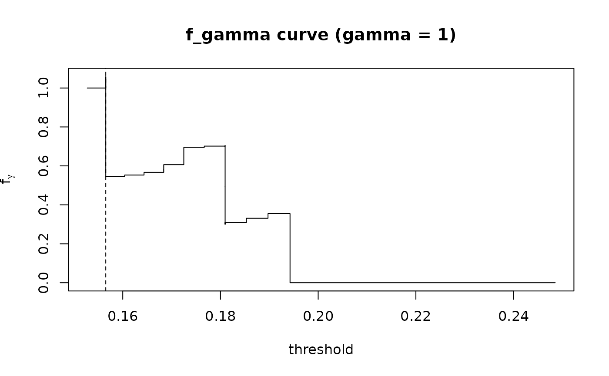

Threshold metric f_gamma for predicted host suitability
Source:R/host_threshold_metric.R
host_threshold_metric.RdComputes the threshold-dependent performance metric $$f_\gamma(t) = a(t) / (\gamma b(t) + c(t))$$ where, for a cutoff \(t\) on the predicted host-suitability scores:
a(t)proportion of known hosts with prediction \(\ge t\) (sensitivity / recall);
b(t)proportion of ALL species in the phylogeny with prediction \(\ge t\) (predicted host breadth, the phylogenetic analogue of predicted area in SDM threshold metrics);
c(t) = 1 - a(t)proportion of known hosts lost (omission).
The metric is designed for presence-only / positive-unlabeled settings:
it never uses absences, and gamma tunes the trade-off between
retaining known hosts and predicting a compact host set. The maximum of
\(f_\gamma(t)\) gives an optimal cutoff \(t^*\).
Arguments
- pred
Numeric vector of predicted suitability scores, one per species in the phylogeny (any real values; typically probabilities).
- is_host
Logical or 0/1 vector of the same length: TRUE/1 for species that are known hosts (presences).
- gamma
Positive scalar weight on the predicted breadth term. Default 1.
Value
An object of class "phylopred_threshold_metric": a data.frame
with columns threshold, a, b, c, and
f_gamma, evaluated at every distinct prediction value. The
optimal cutoff is stored in attributes "optimal_threshold" and
"optimal_f", and gamma in attribute "gamma".
Examples
pairs <- prepare_pair_data(beetleTreeInteractions, phy_dist)
#> Warning: 22 interaction record(s) dropped: host not in 'phydist'.
fit <- stats::glm(suscept ~ phydist, data = pairs, family = stats::binomial())
# Suitability of every host species for one focal parasite
one <- pairs[pairs$parasite == pairs$parasite[1], ]
one <- one[!duplicated(one$target), ]
pred <- stats::predict(fit, newdata = one, type = "response")
m <- host_threshold_metric(pred, one$suscept, gamma = 1)
plot(m)
